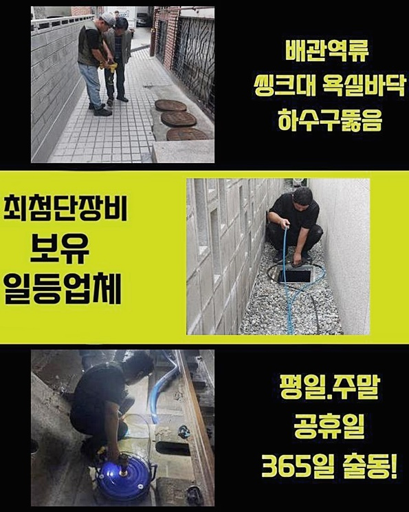
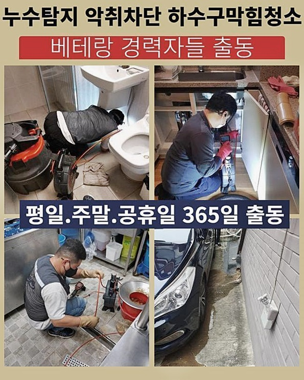
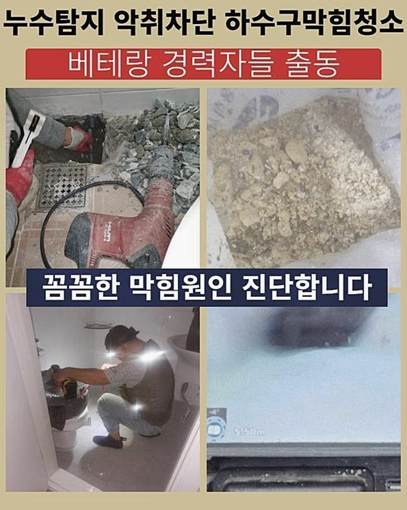
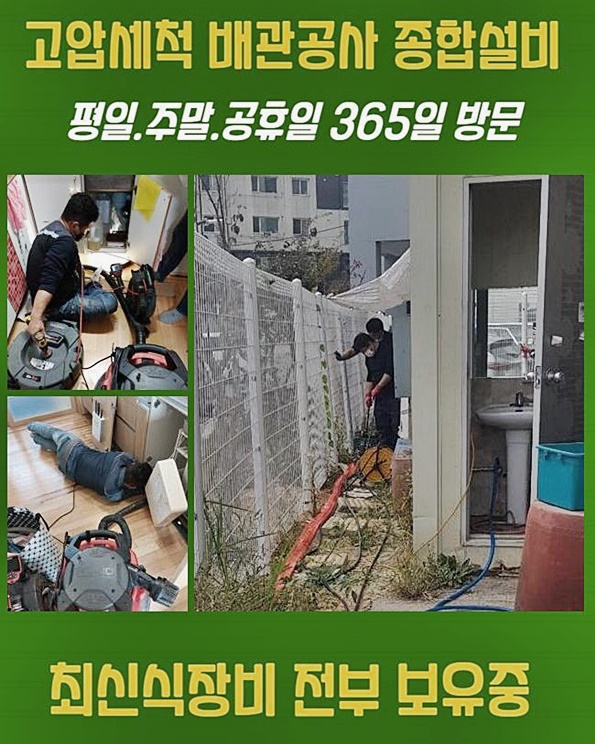
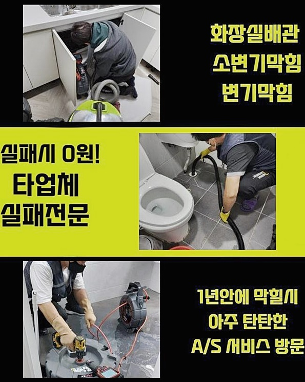

🏠 일산 백석동하수도막힘 문봉동 횡주관청소 설비업체
용인 하수구막힘 전문 시공 후기

📋 작업 개요
- 위치: 용인
- 서비스 유형: 하수구막힘, 배관막힘, 누수수리, 뚫는업체, 배관청소, 고압세척, 설비공사, 악취차단
- 작업 일시: 2024. 7. 25. 1:21
- 업체명: 하수구수사대 (010-5615-2118)
🔍 문제 상황
일산 백석동하수도막힘 문봉동 횡주관청소 설비업체
시급하게 달려와 달라는 요구사항이 있더라도 시간에 구애받지 않고 관통 업무를 도와드린다는 결심을 하고 있습니다
또한 든든한 준비가 동반되기 때문에 적합한 맞춤 방식을 써서 막힘을 극복시켜 드렸습니다
얼른 와달라고 전화주신 덕에 빠른 대처가 이루어졌고 작업 후 곧바로 활용하실 수 있게 됐습니다
현황을 분석했더니 당장 치솟는 문제까지는 발발하지는 않았는데 보일러시설의 고장으로인해 거대한 손상까지 초래될 위험이 있었던 현장이라고 볼 수 있었어요
막힘사태를 눈치채자마자 저희를 찾아내게 되어 천운이라고 말씀하셨는데 자칫 잘못하면 부대적인 견적이 나왔을 수 있습니다
미미한 점이라도 재빠르게 개선을 해야만 더 심화된 상황을 막아설 수 있습니다
뭔가가 수도를 막는 듯 하다고 말해주셔서 즉각적으로 확인하고 트러블을 개선해 드렸던 시공 장소였어요!
다른 시설물까지의 침범이 생겨버리기 전에 기민하고 정밀하게 조정해 드리도록 두루 신경쓰면서 담당을 해드리고 있어요
심야인데도 불구하고 고객분께서 전화주신 다급함을 알기에 설비 전문업체로서 아무리 늦은 시간대라고 해도 탁월하게 관리해 드리는건 기본이라고 할 수 있어요
접수 즉시 재빠른 대처를 제공해 드리며 다양한 도구를 현장에 가져가니 어디 쪽에 막힘이 생겼건 관통을 완수할 수 있습니다
방관한다면 상황은 나아지는 듯 보일 수 있어도 오래 정착해 버리면 개선하기 힘든 일로 악화될 수 있어요

🔎 원인 분석
💡 전문가 진단: 정밀 진단 장비를 사용하여 슬러지의 고착 여부를 판명하고 타격/세척 작업을 실시했습니다.
막힌 사유는 다양하기에 물의 작용과 압력으로 인하여 길이 트이진 않을까 싶더라도 생각만큼 단순하지는 않습니다
첨단 내시경 장치를 활용해서 명확한 사유를 조명하고 가장 효율적인 솔루션을 적용해서 유연하게 배수로의 이슈를 깔끔하게 정돈해 드립니다
많은 해에 걸쳐 축적한 실무 경험을 발휘해서 총체적인 진단과 합리적인 조치를 취하여 뛰어난 결과를 제시해 드립니다
물이 내려가는 길목이 개방되면 내시경장치를 깊숙히 넣어서 어떤 연유로 막힘이 생겼는지 확인하는 게 필요했습니다
해당 기기는 얇은 통로인 파이프라인의 심층부까지 체크할 수 있는 촬영기와 라이트 시설의 조합입니다
촬영을 하면서 내부 노폐물의 특성과 오염되어 버린 구역을 구체적으로 판단내리게 되는데요
탈락된 모발이나 각질이 뒤섞여 있었기에 집중적인 청소에 들어갔어요
고객님 역시 카메라의 화면을 통하여 현 배관의 실황을 체험하시게끔 해드렸는데 내부에 고인 오염물이 이만큼 다량 나올 줄 몰랐었다합니다
카메라를 여러 번 체크하면서 부족한 측면을 확인해가면서 제대로 임무를 도맡아 드리지 못할 경우에는 트러블이 되풀이되고 맙니다!
보편적인 막힘 사안은 장시간 두면 바위처럼 경화되기에 수습하기가 더욱 힘들어질 수 있습니다
홀로 처리하는 것만으로는 명쾌한 통로의 회복을 갖지는 못하기 때문에 전적인 세척 작업을 청구하는 것이 좋습니다
이번 케이스의 장소는 주거 상업이 모인 건물로 건축적인 노후화되 이루어진데다 여러 세대가 한데 밀집된 경우였습니다

🔧 작업 과정
물이 흐르는 하수관의 활용도가 많기 때문에 하수배관 시스템의 곤란함이 피어날 확률이 농후합니다
이용한 생활하수가 호쾌하게 처리되지 않은 채 축적되면 파이프 내측에서 결손이 생겨날 수 있으므로 경계해야 하는 부분입니다
원인을 제대로 분석하고 이를 통한 대응법이 실시되면 건물에 치명적인 손실이 발생하는 현상 자체를 방비할 수 있게 됩니다
하수구에 이물질이 쭉 쌓이다보면 자극을 받아 파손되어 누수마저 발생돼서 이를 빌미로 건물의 물리적 상태에 나쁜 반응을 주어 광범위한 공사로 귀결됩니다
약간의 오염원만 끼어있어도 층을 이루면서 양이 불어나면 배관 벽체와 합체되어서 척결하기가 까다로운 정도로 진전되기 때문에 조기에 조치해야 합니다
파이프 속에 장애요소가 뚜렷하게 보인다면 샤프트 장비를 써서 세세하게 닦아내는 일이 필요하다고 할 수 있어요
관로에 카메라를 넣고 통청소를 한 공간을 빠지는 구역없이 봐주고 남아있는 잔량이 없도록하는 꼼꼼함을 필두로 해야합니다
약간의 찌꺼기라도 적시에 소거함으로써 향후에 생겨날 수 있는 요소를 차단하는 겁니다
일단 배관을 정돈하게 되면 잘 개선됐나 살펴가며 관로 속을 티끌 하나 없이 유지하는 작업이 필요한 겁니다
이번에 활용한 샤프트는 내부정돈 하는 분야에 있어 전용 청소도구입니다
기기의 끝단에 접착된 노커가 빠른 속도로 돌며 벽면을 따라 들러붙은 방해요소를 삭제시킵니다
보편적인 경우를 보자면 하수를 이용하면서 작은 입자들이 안으로 침투하게 된다면 여러 시간이 흐를수록 더욱 양이 늘어납니다
막힘이 오래유지된다면 더 많은 노력과 투자가 들어가야 할 것입니다
단단한 파이프였다고 해도 시간이 가면갈수록 통로가 얇아지기 때문에 하수구가 고장나는 문제를 낳을 지도 모릅니다
오래토록 작동해온 배관일 경우 찐득한 기름때도 다량 형성되어 물의 흐름 속도를 차단할 수 있으며 점차 몸집이 불어서 압박을 가하고 가뜩이나 약한 배관의 손상을 부추겨요
설비에 대해 정기진단을 받고 하수관로의 청소도 이뤄져야 하며 문제의 소지가 다분한 만큼 주거지가 신축이 아니라면 보다 신경써서 봐줘야 합니다
하수구의 출입구를 통해 안에 고여있던 더러운 찌꺼기가 역행할 때도 있으니 실내의 오염을 방비하려면 바쁘시더라도 전문 청소를 자주 해주는 단계가 들어가야 합니다
만일 기다란 관로를 따라 쭉 조성되어 있다면 하수구 고압세척 기계를 써서 손상되지 않는 선에서 정리하는게 시간을 아끼는 비법입니다
무작정 압박을 주지 마시고 막힘이 생기자마자 배관공의 힘을 빌려서 배관 속의 막힘 사건의 기저를 판단하여 말끔한 해소방법을 취하는 작업이 필요한 겁니다
하수도의 설계에 대한 지식이 결핍되었다면 과격하게 뚫어주는 활동보다는 전문적 조치가 있기까지 가만히 보존하시는 편이 나아요


✅ 작업 완료
약한 쪽을 건드리기라도 하면 물샘이나 파손같은 많은 공사비용이 들어가는 시공이 들어가야만 하는 사태가 빚어져서 부담스러우실 겁니다
철두철미한 작업 진행과 하자 없는 시공을 통해서 하수가 원활하게 이동하게 해드리고 작은 흠이라도 없는지 재차 보고 끝맺음을 합니다
항상 첨단 장치를 동원하고 있기에서 고객님의 문제를 재빨리 고쳐드리고자 각고의 노력을 기울입니다
옥외 시설도 수습하는 대형장비까지 자원을 두루 확보한 업체이므로 어떤 조건일지라도 복원해 드릴 수 있어요!
물이 고여만가는 난감한 상황이 도래한다면 얼른 저희에게 조치해달라 말만 해주시면 다년간의 스킬을 발휘해서 건강한 설비로 되돌려드릴게요



⚠️ 베란다 누수 및 방수 관리 방법
- ✅ 비가 많이 올 때 창틀 주변이나 아래층 천장에 얼룩이 생기는지 정기적으로 확인해 보세요.
- ✅ 우수관 주변 실리콘 마감이 들뜨거나 깨진 틈새가 있는지 손상 여부를 수시로 체크하세요.
- ✅ 베란다 바닥 타일의 줄눈(메지)이 소실되면 그 틈으로 물이 침투하여 누수가 유발됩니다.
- ✅ 누수 의심 증상 발견 시 방치하면 아래층 손실이 커지므로 즉시 전문가의 진단을 받으십시오.
💡 핵심 정리
- 확실한 장비 작업(내시경 점검 및 샤프트 스케일링)으로 원인을 뿌리 뽑습니다.
- 작업 후 1년 이내에 동일한 부위 재발 시 100% 무상 A/S 서비스를 보장합니다.
- 서울 · 경기 · 인천 전 지역에 24시간 언제든 긴급 출동할 수 있도록 항시 대기 중입니다.
❓ 자주 묻는 질문 (FAQ)
🚨 용인 하수구막힘 문제로 고민이신가요?
정확한 원인 진단과 확실한 시공으로 재발 없는 해결을 약속드립니다.
24시간 긴급 출동 | 서울 · 경기 · 인천 전지역 | 1년 내 재발 시 무상 A/S